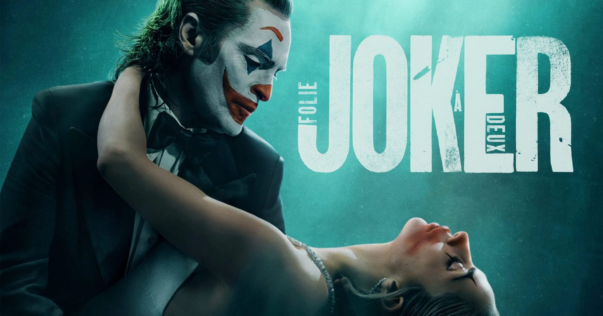
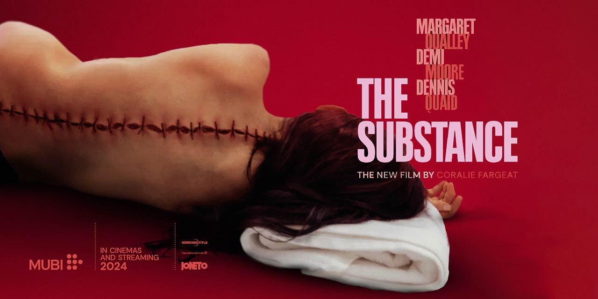
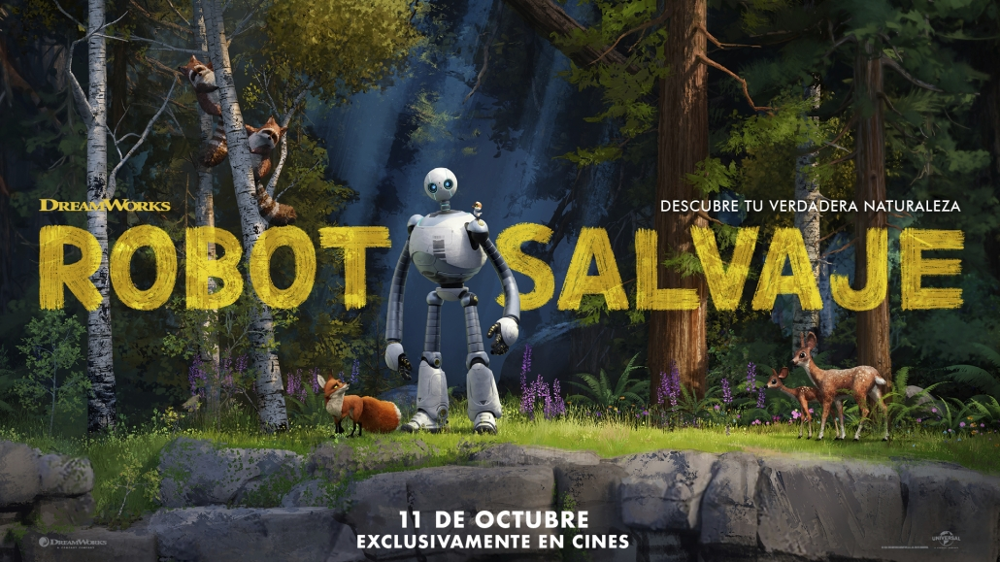

Director: Todd Phillips
Data d'estrena: 04/10/2024
Durada: 137 min
Gènere: Thriller, Drama, Crimen, Musical
Storyline: Arthur està internat al psiquiàtric de Arkham en espera de judici pels crims que va cometre com Joker. Mentre lluita amb la seva doble personalitat, Arthur no sols es topa amb l'amor, sinó que també troba la música que sempre ha estat dins d'ell.
Tràiler: www.youtube.com/watch?v=GD4RVzGgfbQ
Horaris:
- Dilluns a divendres: 16:00, 19:00
- Dissabte: 16:00, 19:00, 22:00
- Diumenge: 16:00, 19:00
3D VMAX VOSE

Director: Arantxa Echevarria
Data d'estrena: 11/10/2024
Durada: 118 min
Gènere: Thriller
Storyline: Basada en la història real d'Aranzazu Berradre Marín, una jove policia nacional que es va infiltrar en la banda terrorista ETA durant 8 anys. Amb només 20 anys, es va fer passar per militant del Moviment d'Objecció de Consciència, convivint amb dirigents d'ETA i trencant tots els llaços familiars per desarticular el comando Donosti en un moment crític. És la història d'una dona valenta que va sacrificar la seva vida per salvar la dels altres.
Tràiler: https://www.youtube.com/watch?v=_eAYhtaEQGM&ab_channel=Cinecon%C3%91
Horaris:
- Divendres a dissabte: 15:30, 18:30, 21:30
- Diumenge: 15:30, 18:30
3D VMAX VOSE

Director: Coralie Fargeat
Data d'estrena: 11/10/2024
Durada: 141 min
Gènere: Terror, Ciència-ficció, Drama
Storyline: Has somiat mai amb una millor versió de tu mateixa? La Substància ho fa possible: crea una nova tu, més jove i perfecta. L'única regla és compartir el temps: una setmana per a tu i una altra per a la nova tu. Un equilibri aparentment perfecte. Què podria sortir malament?
Tràiler: https://youtu.be/H7TLBH2eYbo
Horaris:
- Divendres a dissabte: 17:00, 20:00, 23:00
- Diumenge: 17:00, 20:00
3D VMAX VOSE

Celebra Halloween amb nosaltres en una nit terrorífica dedicada al cinema de por! T'hem preparat un especial de pel·lícules de terror que et faran estremir: des dels clàssics més inquietants fins a les novetats més espantoses. Contarem amb: Alien, el vuitè passatger (1979), Raw (2016), Babadook (2014), Divendres 13 (1980) i L’exorcista (1973). Vine a gaudir de les teves pel·lícules favorites en un ambient esgarrifós, amb sorpreses i activitats que faran que la nit sigui inoblidable. No et perdis aquesta oportunitat de viure una experiència aterridora al cinema! T’esperem amb els braços oberts… si goses!

T'animem a descobrir o redescobrir els grans clàssics del cinema amb el nostre nou cicle mensual! Cada mes, presentarem una selecció de pel·lícules icòniques que han deixat empremta en la història del setè art. Des de pel·lícules en blanc i negre fins a obres mestres de diferents gèneres, cada sessió serà una oportunitat única per gaudir d’aquestes joies cinematogràfiques en pantalla gran. Aquest mes presentem: Esmorzar amb diamants (1961), Metropolis (1927), Amb la mort als talons (1959), El crepuscle dels déus (1950).

Acompanya'ns per una vetllada inoblidable dedicada a l'univers creatiu d'Álex de la Iglesia! Estarem encantats de rebre el director en una tertúlia exclusiva, on compartirà les seves experiències i inspiracions darrere de les seves pel·lícules més emblemàtiques. Després de la conversa, gaudirem d'una sessió triple amb alguns dels seus millors treballs: El dia de la bèstia(1995), Les Bruixes de Zugarramurdi(2013) i Veneciafrenia(2021). No et perdis aquesta oportunitat única de submergir-te en el món del cinema amb un dels grans mestres del gènere! T'esperem!